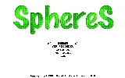
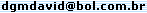

| DGM Jaguar Virtual Video-Game Hardware System Projeto no qual eu volto a trabalhar. Trata-se de um "video-game virtual". Mais informações aqui. |
| DGM Couronne v1.1.0 Versão gratuita e online, em 3D, do jogo Couronne. Estilo sinuca multiplayer, porém o jogo se dá com discos e há apenas 4 caçapas. Jogo desenvolvido em 2005, atualizado em 2007. Clique aqui para maiores informações e para fazer o download. |
 |
DGM Tetris Minha versão do jogo Tetris clássico. Freeware e com source-code incluso, em Delphi. Jogo desenvolvido em 2005. Clique aqui para fazer o Download (399Kb) |
| DGM Gorilas 3D "Remake", em 3D, do jogo "Gorilas". Jogo atualmente em desenvolvimento. (parado) Clique aqui para maiores informações. |
| DGM Farm Jogo de simulação de fazenda, buscando todos os elementos originais do Sim Farm, com novas funções e recursos que acrescentam mais possibilidades de jogo. Jogo atualmente em desenvolvimento. (parado) Clique aqui para maiores informações. |
| DGM GunForFun Jogo de tiro, semelhante a Worms e GunBound. Jogo atualmente em desenvolvimento. (parado) Clique aqui para maiores informações. |
|  | DGM Spheres v1.0 Jogo de quebra cabeças, onde você tem de combinar esferas coloridas para eliminá-las. Source-code incluso. Jogo desenvolvido em 2000/2001. Para MS-DOS/Windows. Clique aqui para fazer o Download (380Kb) |
| DGM Bomb v2.0 Jogo de estratégia estilo Bomberman. Versão incompleta - mas mesmo assim muito legal. Jogo desenvolvido em 1999. Para MS-DOS. Clique aqui para fazer o Download (305Kb) |
| DGM Aracnofobia v1.0 Jogo de tiro bem simples, onde você não deve deixar que as aranhas cheguem ao chão. Jogo desenvolvido em 2000. Para MS-DOS. Clique aqui para fazer o Download (43,8Kb) |
| DGM Et Scape v1.0 e 2.0 Jogo de tiro bem simples, onde você deve abater todos os et's, para impedi-los de fugir. Jogos desenvolvidos em 1996 e 1997. Para MS-DOS. Clique aqui para fazer o Download (60,1Kb) |
Se você encontrou algum link quebrado, por favor entre em contato comigo pelo email  Obrigado.